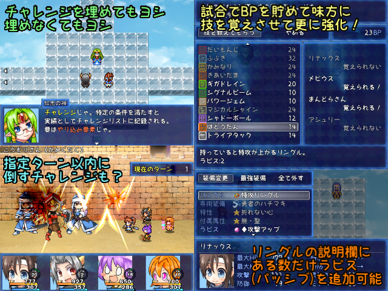

 |
|
| 作者：すいかびぃ | |
| ツクール：VXAce | |
| ジャンル：ボスラッシュ | |
| 配信/投稿：可/可 | |
| keyword：人によっては懐かしいアノそんざいや未知の相手とも戦えるかも | |
| 投票：投票はこちら | |
| 作者コメント： ※感想掲示板に修正パッチがあります。ご確認下さい。 なぜ生命体はかちぬくことでしか生きられないのであろうか。 そのギモンが明かされぬまま、かのじょがひかりのゆうしゃとよばれるわけを、 ボスたちは戦いをいどんではじめて知ることとなる。(ロボプラ勝ち抜きのパロ) 文字通り多くのもしもキャラに連戦を挑んで勝ち抜くボスラッシュゲーです。 相手に勝利することで手に入るバトルポイント(BP)を消費して新しい技を覚えさせたり より性能の良いリングルやラピスを購入することで味方を強化できます。 『リングルとラピスについて』 元ネタは超ポケダン。リングルという装備品にラピス(パッシブスキル)を指定数まで装着できる。 戦う相手に合わせてうまく切り替えて行く必要があります。 (とはいえ基本的にゴリ押しでも何とかなる難易度です) やり込み要素として特定の条件を満たすと埋まっていく「チャレンジリスト」があります。 味方は「勝ち抜きボスバトルGW2017」から継続の リナックス、メビウス、アシュリー、ミストラルに加え 今回追加された6人の計10人がいます。 特定の味方を連れていった時のみ登場する対戦相手もいたりいなかったり。 元ネタ(？)通り追加アップデート込みで完成の予定です。 感想掲示板で追加の味方メンバーの案を募集しています。 |
|
| 管理人コメント： 装備やパッシブ、味方の選択の幅が広いといろんな攻略スタイルがとれそうですね。 |
|
| 更新履歴：12/29遅刻提出→01/21本体更新→01/23本体更新 | |
| ダウンロード / 感想掲示板 | |
| 前の作品 / 次の作品 / TOPへ戻る | |